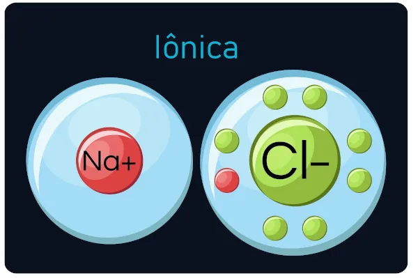
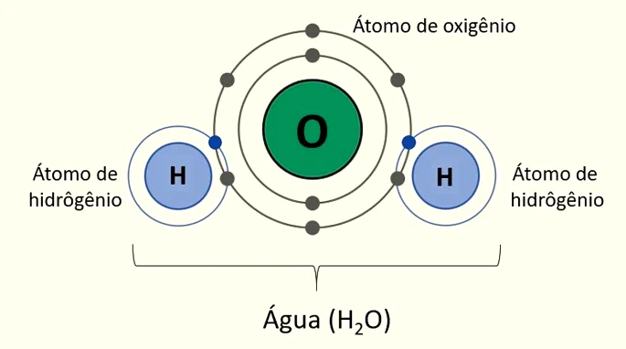
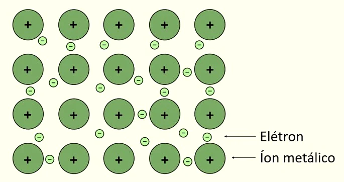

1 LIGAÇÕES QUÍMICAS
"As ligações químicas consistem em interações que os átomos realizam a fim de se estabilizarem eletronicamente" (ARAÚJO, 2023).
1.1 PORQUE OCORREM AS LIGAÇÕES QUÍMICAS
As ligações químicas servem para os átomos adquirirem maior estabilidade, mas o que significa estabilidade? Para descrevê-la podemos utilizar a Regra do Octeto, esta é a forma mais comum de se explicar a razão das ligações químicas porém possui algumas exceções, principalmente se tratando dos elementos de transição (ARAÚJO, 2023).
Segundo a Regra do Octeto, um átomo é considerado estável quando possui oito elétrons na última camada de valência. O número oito é baseado no fato de os gases nobres (com exceção do hélio) possuírem essa quantidade, já que eles são os únicos elementos inertes da tabela periódica (ou seja, eles normalmente não reagem quimicamente). Para que os átomos se tornem estáveis é necessário haver doação/recebimento de elétrons ou o compartilhamento de elétrons entre os átomos, e é a partir disso que surgem as ligações químicas (BATISTA, 2023).
1.2 TIPOS DE LIGAÇÕES QUÍMICAS
1.2.1 Ligações iônicas
As ligações iônicas podem ser chamadas de ligações eletrovalentes ou heteropolares, elas ocorrem entre metais e elementos muito eletronegativos. Ao realizar as ligações, os metais tendem a perder elétrons e os elementos eletronegativos tendem a ganhar elétrons. Após isso os metais tornam-se cátions e os elementos eletronegativos tornam-se ânions (ARAÚJO, 2023). Na demonstração abaixo o sódio doa um elétron para o cloro, e assim há uma ligação iônica entre o sódio e o cloro:
Figura 1 - Ligação iônica entre o sódio e o cloro
Fonte: Brasil Escola, 2023
1.2.2 Ligações covalentes
As ligações covalentes também podem ser chamadas de ligação molecularnesse tipo de ligação é preciso compartilhar elétrons para que haja estabilidade. Os elétrons cedidos pelos núcleos (utilizados para compartilhamento) são chamados de pares eletrônicos (BATISTA, 2023).Na imagem abaixo vemos como é formada a molécula da água, nela há dois átomos de hidrogênio que compartilham um elétron com um átomo de oxigênio:
Figura 2 - Molécula da água
Toda Máteria, 2023
1.2.3 Ligação Covalente Dativa
A ligação covalente dativa é muito parecida com a ligação covalente , a diferença é que na dativa há o compartilhamento de dois elétrons. Essa ligação é artificial porém possui as mesmas características da ligação covalente, que é espontânea (ARAÚJO, 2023).
1.2.4 Ligação Metálica
A ligação metálica ocorre entre os metais, a perda de elétrons da última camada forma o que conhecemos como "elétrons livres”, após isso os metais tornam-se cátions.Os elétrons que são liberados da última camada originou a chamada “nuvem eletrônica" ou “mar de elétrons", a força feita por eles faz os átomos permanecerem juntos (BATISTA, 2023).
Figura 3 - Demonstração de como ocorre a ligação metálica:
Toda Máteria, 2023
REFERÊNCIAS
ARAÚJO, Laysa Bernardes Marques de. Ligações químicas. Brasil Escola. Disponível em: https://brasilescola.uol.com.br/quimica/ligacoes-quimicas.htm. Acesso em: 03 de abr. de 2023.
BATISTA, Carolina. Ligações Químicas. Toda Matéria, [s.d.]. Disponível em: https://www.todamateria.com.br/ligacoes-quimicas/ . Acesso em: 3 abr. 2023.